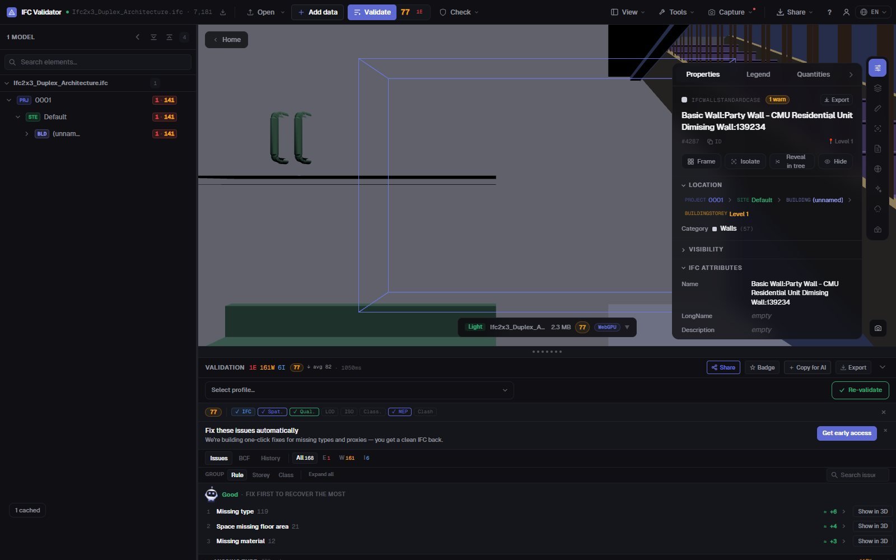
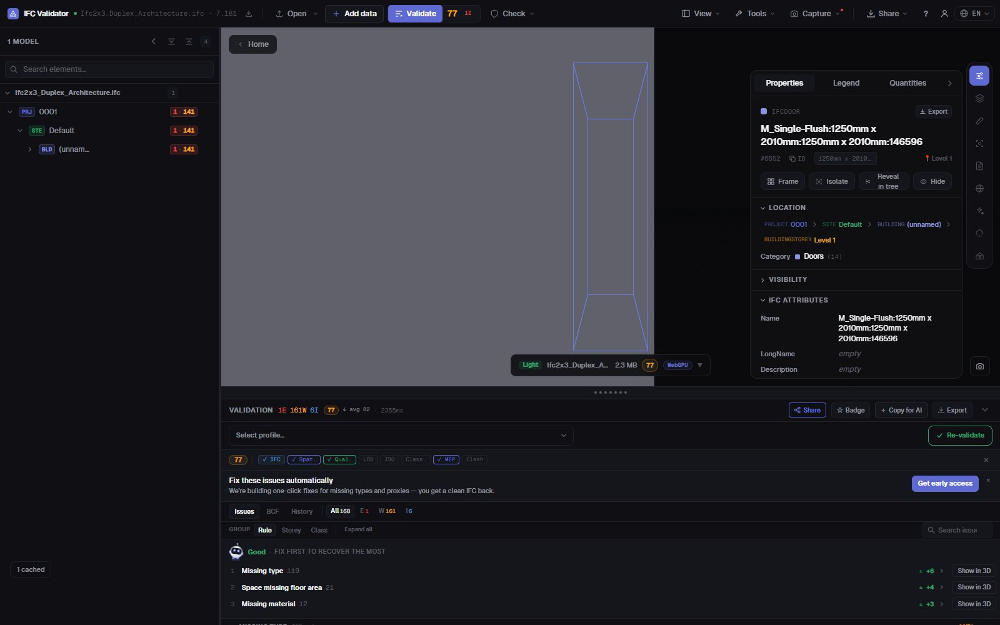

Free IFC Editor
online, in your browser
Open an IFC file, select any element and change what is wrong: its name, its LongName, a property value, the storey it sits on. Every edit can be undone, and the result exports as a standard IFC your BIM tool reopens. The file never leaves your computer.
Edit an IFC file — free →No account · Nothing uploaded · Runs in your browser · Free

What you can do
Edit an IFC without Revit, ArchiCAD or a licence
For the fixes you would otherwise send back to the author: fast, reversible and saved as a real IFC.
Rename elements
Change Name and LongName on any element, or rename every duplicate or empty name at once with a pattern ({class}, {storey}, {n}).
Edit property values
Change the value of any property already in the element’s property sets (Pset_WallCommon, custom Psets…).
Fix GUIDs
Regenerate duplicate or malformed GlobalIds in one click — the most common export error from authoring tools.
Move between storeys
Re-parent an element to another spatial container when it was exported on the wrong level.
Undo everything
Every change is a command with undo and redo; nothing touches the original file until you export.
Export IFC or GLB
Download the edited model as IFC (same schema as the original) or as GLB for web and AR viewers.
Screenshots

FAQ
Questions
Is there a free IFC editor online?
Yes. IFC Viewer Online is free for all uses, including commercial work. Open the page, drop an .ifc file and edit it in the browser — no installation, no account and no upload, because the file is read locally with WebAssembly.
What can I change in an IFC file?
Element names (Name, LongName), the values of existing properties, GlobalIds, and the spatial container an element belongs to. You can also rename many elements at once. It is not a modelling tool: geometry is not edited.
Will the edited IFC open in Revit, ArchiCAD or Solibri?
Yes. The export writes a standard IFC in the same schema as the file you opened (IFC2x3, IFC4, IFC4x3) with your changes applied, so any tool that read the original reads the edited one.
Is my model uploaded anywhere?
No. Parsing, editing and export all happen in your browser. You can check it in DevTools: no request carries the file. It works under NDA and offline once loaded.
Can I check the model after editing?
Yes — the same app validates the file against 44 quality rules and gives a Health Score 0–100, so you can see the score go up after your fixes.
Fix the IFC yourself — in a minute, not a round trip.
Rename · Edit properties · Fix GUIDs · Undo · Export IFC
Edit an IFC file — free →